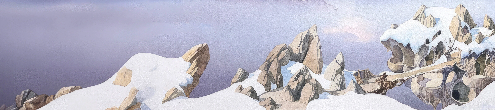

Introduction
Shibui (渋い) is a yet another minimalistic Hugo theme

Features
- Minimalist design following Shibui (渋い) aesthetics
- Terminal-inspired navigation
- Clean typography with monospace font
- Semantic HTML with proper text styling (bold, italic, blockquotes)
- Paper-like color scheme
- Automatic dark/light theme support
- Nested heading counters
- Zero JavaScript (pure CSS solutions)
- Highly customizable through CSS variables
- Mobile-responsive layout
- Table of Contents support
- Tags support
About the Shibui
Shibui (渋い) (adjective), shibumi (渋み) (subjective noun), or shibusa (渋さ) (objective noun) are Japanese words that refer to a particular aesthetic of simple, subtle, and unobtrusive beauty. Like other Japanese aesthetics terms, such as iki and wabi-sabi, shibui can apply to a wide variety of subjects, not just art or fashion.
Shibusa is an enriched, subdued appearance or experience of intrinsically fine quality with economy of form, line, and effort, producing a timeless tranquility.
Shibusa includes the following essential qualities:
Shibui objects appear to be simple overall, but they include subtle details, such as textures, that balance simplicity with complexity.
This balance of simplicity and complexity ensures that one does not tire of a shibui object, but constantly finds new meanings and enriched beauty that cause its aesthetic value to grow over the years.
Shibusa walks a fine line between contrasting aesthetic concepts such as elegant and rough or spontaneous and restrained.
Color is given more to meditation than to spectacle. Understated, not innocent. Subdued colors, muddied with gray tones create a silvery effect. (Shibuichi is a billon metal alloy with a silver-gray appearance.) In interior decorating and painting, gray is added to primary colors to create a silvery effect that ties different colors together in a coordinated scheme. Depending on how much gray is added, shibui colors range from pastels to dark. Brown, black, and soft white are preferred. Quiet monochromes and sparse subdued design provide a somber serenity with a hint of sparkle. Occasionally, a patch of bright color is added as a highlight.